Una variable aleatoria \(X\) es una variable que contiene un grado de incertidumbre. Se caracteriza por una distribución
(ej. Distribución normal o lognormal). Una “realización” de una variable aleatoria toma un único valor.
Ejemplos de variables aleatorias:
Un proceso estocástico (p.e.) \(\mathbb {X}\) es una colección de variables aleatorias para cada \(t \in T\). Para los casos prácticos de este curso, la indexación \(t\) puede ser el tiempo, por lo que la colección es secuencial. Además, un p.e. puede ser continuo (imposible de hacer en computador) o discreto (conjunto, arreglo o vector). \begin {align*} \Longrightarrow \mathbb {X} = \{X(t): t \in T\} =\{X(t_1), X(t_2), ..., X(t_m)\} \end {align*}
Una realización de un proceso estocástico corresponde a la realización de todas las variables aleatorias de su
colección.
Realización 1:
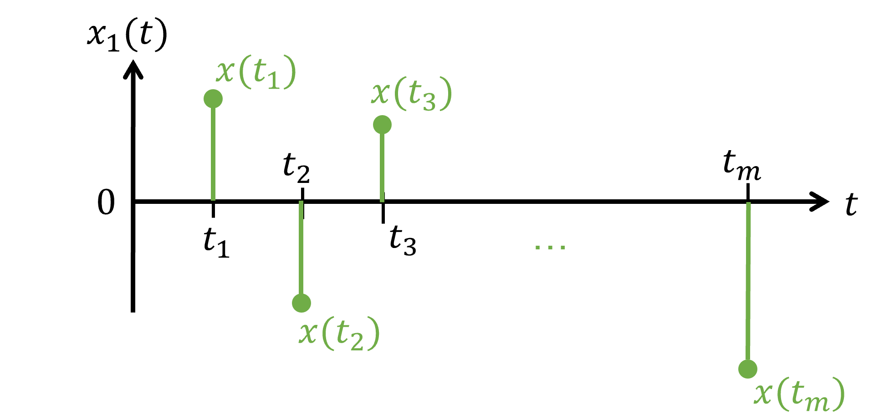
Realización 2:
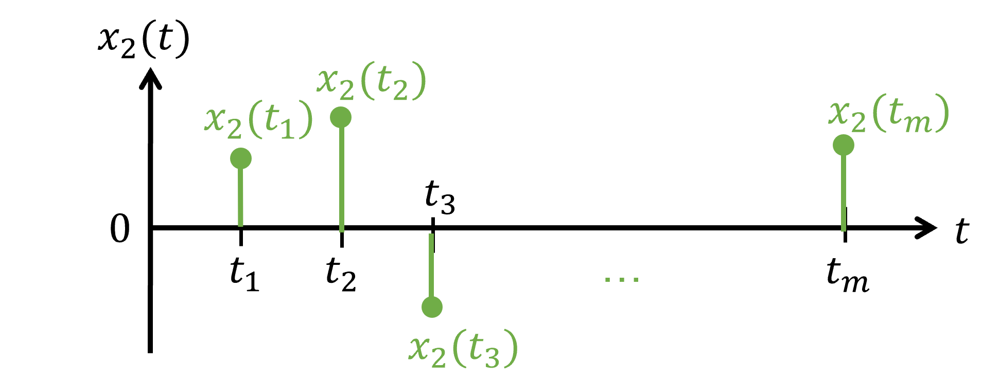
Ejemplos de p.e. para aplicación en ingeniería estructural:
Existen 2 formas de describir un p.e. \(\mathbb {X} = \{X(t)\), \(t\in T\}\):
Función de densidad de probabilidad acumulada conjunta
La función de densidad de probabilidad acumulada conjunta (joint CDF en inglés) de un proceso estocástico se define como la probabilidad conjunta de que el proceso tome ciertos valores en diferentes instantes de tiempo.
Matemáticamente, se expresa como:
\begin {align*} F_{X}({x(t)}) &= \mathbb {P}[X(t) \leq {x(t)}]\\ \Longrightarrow F_{X}(x_1,x_2,\ldots ,x_m) &= \mathbb {P} \left [ X(t_1)\leq x_1 \cap X(t_2) \leq x_2 \cap \cdots \cap X(t_m) \leq x_m \right ] \end {align*}
Esta expresión nos proporciona la probabilidad de que el proceso estocástico \(X(t)\) en los tiempos \(t_i\) tome valores que no excedan \(x(t_i)=x_i\).
Mientras, la función de densidad de probabilidad conjunta (joint PDF en inglés) se define como:
\begin {equation*} f_{X}({x(t)}) = \frac {\partial ^m F_X(x_1,x_2,\ldots ,x_m)}{\partial x_1 \partial x_2 \cdots \partial x_m} \end {equation*}
Momentos estocásticos
Recordatorio:
El valor esperado de una variable aleatoria \(\mathbb {E}\{X\}\) es la integral del producto entre los valores que puede
tomar esa variable aleatoria \(x\) y la función de distribución de probabilidad evaluada en ese valor
\(f_X(x) = \mathbb {P}(X=x)\).
\begin {align*} \mathbb {E}\{X\} = \int _{-\infty }^{\infty } x f_X(x) dx \end {align*}
En el caso discreto \(p_X(x_i) = \mathbb {P}(X=x_i)\):
\begin {align*} \mathbb {E}\{X\} = \sum _{i=1}^{\infty } x_i p_X(x_i) \end {align*}
En MATLAB, se puede ocupar mean(X) donde X es un vector de números sampleados con la distribución de su
correspondiente variable aleatoria \(X\).
Los momentos estadísticos de 1er y 2do orden son los siguientes:
Función de autocovarianza \((m \times m)\): \begin {align*} \Gamma _{XX}(t_i,t_j)&=\mathbb {E}\{[X(t_i)-\mu _X(t_i)][X(t_j)-\mu _X(t_j)]\} \\ \Gamma _{XX}(t_i,t_j)&=R_{XX}(t_i,t_j)-\mu _{X}(t_i) \mu _{X}(t_j) \end {align*}
Nota: \(\sigma _{X}^2(t_i) = \Gamma _{XX}(t_i,t_i)\)
Coeficiente de correlación \((m \times m)\): \begin {align*} \rho _{XX}(t_i,t_j) = \frac {\Gamma _{XX}(t_i,t_j)}{\sigma _{X}(t_i)\sigma _{X}(t_j)} \end {align*}
Notar que: \(\rho _{XX}(t_i, t_i) = 1\).
Interpretación de la correlación: “medida de independencia lineal entre variables aleatorias”.
En caso de dos procesos estocásticos, \(\mathbb {X} = \{X(t)\), \(t \in T_X\}\) e \( \mathbb {Y} = \{Y(t)\), \(t \in T_Y\}\).
P.E. no estacionario: La distribución de probabilidad del p.e. depende del tiempo. Las variables aleatorias de la colección no tienen la misma distribución.
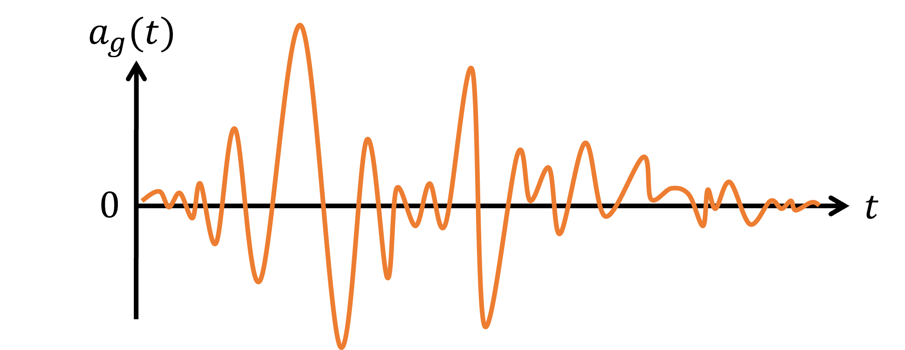
P.E. Estrictamente estacionario: La distribución de probabilidad del p.e. no cambia con un retraso en el tiempo: \begin {equation*} F_{X}(x_1,...,x_m; t_1,...,t_m) = F_{X}(x_1,...,x_m; \textcolor {brown}{t_1 + \tau ,...,t_m + \tau }) \end {equation*}
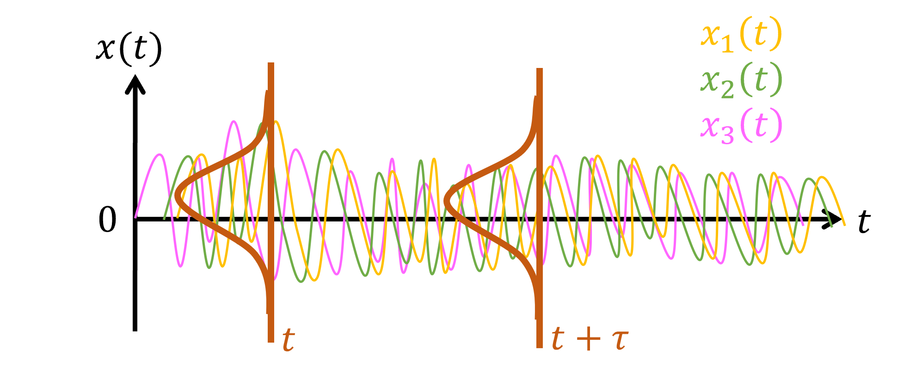
Un proceso ergódico es aquel en el que los promedios temporales de sus realizaciones son iguales a los promedios estadísticos sobre el conjunto de todas las posibles realizaciones del proceso.
Sea \(\mathbb {X}=\{X(t): t\in T\}\) un p.e. estacionario. Se define una media en el tiempo de una función \(g(x(t))\):
\[ \overline {g(X(t))} = \lim _{T \to \infty } \frac {1}{T} \int _0^T g(x(t)) dt\]
Y la media en el conjunto de la función \(g(x(t))\):
\[ \mathbb {E}\left [g(X(t))\right ] = \int _{-\infty }^{\infty } g(x(t)) f_X(x(t)) dx\]
Entonces, se dice que es ergódico ssi la media en el tiempo es igual a la media en el conjunto:
\[ \overline {g(X(t))} = \mathbb {E}\left [g(X(t))\right ]\]
En específico, un proceso estocastico se define como:
Si la media estimada en el tiempo:
\[\overline {X} = \lim _{T \to \infty } \frac {1}{T} \int _0^T x(t) dt\]
es igual a la media en el conjunto:
\[\mathbb {E}\left [X(t)\right ] = \mu _X\]
Si la autocovarianza estimada en el tiempo:
\[\overline {\Gamma _X}(\tau ) = \lim _{T \to \infty } \frac {1}{T} \int _0^T (x(t)- \mu _X)(x(t+\tau )- \mu _X)^T dt\]
es igual a la autocovarianza en el conjunto:
\[\mathbb {E}\left [ (X(t)- \mu _X)(X(t+\tau )- \mu _X)^T \right ] = \Gamma _X(\tau )\] .
Si el p.e. es ergódigo en la media y en la autocovarianza.
Un p.e. \(\mathbb {X} = \{X(t)\), \(t \in T\}\), se llama p.e. Gaussiano si, para cada \(t\in T\), las \(m\) variables aleatorias \(X(t_1)\), \(X(t_2)\), \(...,\) \(X(t_m)\) distribuyen normal.
\begin {align*} X_i \sim N\big (\mu _X(t), \sigma _X(t)\big )\\ \Longrightarrow \mathbb {X} = \{X(t), t \in T\}\sim N\big (\mu _X,\Gamma _{XX}\big ) \end {align*}
donde \(\mu _X\) es el vector de las medias de las variables aleatorias del p.e. y \(\Gamma _{XX}\) es la matriz de auto-covarianza.
Notas:
Definición: Función de Autocorrelación.
Sea \(\mathbb {X} = \{X(t), t \in T\}\) un w.s.s (wide sense stationary). La matriz de autocorrelación es constante para mismas diferencias temporales, es decir, que la función de autocorrelación sólo depende de la diferencia de tiempo.
\begin {align*} R_{X}(t_i,t_j) = R_X(\underbrace {t_i - t_j}_{= \tau }) \end {align*}
Por lo tanto, se define la Función de Autocorrelación \(R_X(\tau )\) como:
\begin {align*} R_{X}(\tau )=\mathbb {E}\{X(t)X(t+\tau )\} \end {align*}
Características de \(R_{X}(\tau )\):
En \(\tau =0\), \(R_{X} (0)\) entrega el máximo valor de la media cuadrada del p.e. \(\mathbb {X} = \{X(t), t \in T\}\):
\(R_{X}(0)=\mathbb {E}\{X(t)^2\}=\sigma ^2_X + \mu _X^2\)
\(R_{X}(\tau )\) es una función definida positiva, es decir, para cualquier función \(g(t)\): \begin {align*} g(t_1)^T R_{X}(t_1-t_2)g(t_2)\geq 0 \end {align*}
Por lo tanto, \(R_{X} (\tau )\) es definida positiva siempre.
Primero, debemos establecer la definición adecuada de transformada de Fourier. La convención a utilizar es la que corresponde a ingenierísa, donde la transformada de Fourier se define de la siguiente manera:
\begin {align*} X(\omega ) &= \mathcal {F}\{x(t)\} &= \int _{-\infty }^{\infty } x(t) e^{-j \omega t} dt & & & \text {(Transformada adelante, \emph {forward})} \\ x(t) &= \mathcal {F}^{-1}\{X(\omega )\} &= \frac {1}{2\pi } \int _{-\infty }^{\infty } X(\omega ) e^{j \omega t} d\omega & & &\text {(Transformada atrás, \emph {inverse})} \end {align*}
donde \(j=\sqrt {-1}\) es el número complejo. Notar las siguientes identidades importantes:
Teorema 6 (Teorema de Wiener-Khinchin).
Sea \(\{X(t): t\in T\}\) un p.e. w.s.s., con función de autocorrelación \(R_{X} (\tau )\). La función de densidad de poder espectral (PSD) se define como la transformada de Fourier de la función de autocorrelación:
\begin {align*} S_{X}(\omega ) &=\mathcal {F}\{R_{X}(\tau )\} \end {align*}
Equivalentemente:
\begin {align*} R_{X}(\tau ) &=\mathcal {F}^{-1}\{S_{X}(\omega )\} \end {align*}
El poder se define como el área bajo la curva de \(S_{X}(\omega )\)
\[ P_X = \frac {1}{2\pi }\int _{-\infty }^{\infty } S_X(\omega ) \]
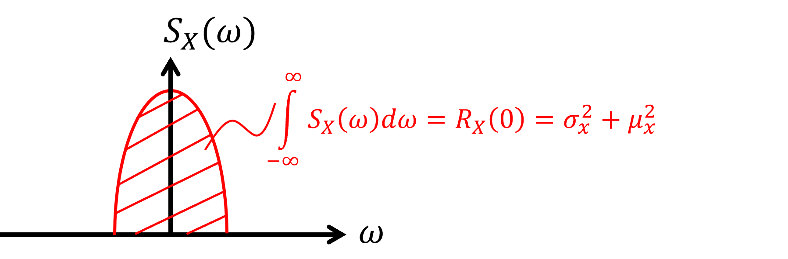
Sea \(\mathbb {X}=\{X(t): t\in T\}\) un p.e. w.s.s. Gaussiano, con \(\mu _X=0\) en todo \(t \in T\), \(\mathbb {X}\) es un ruido blanco si su PSD es constante:
\begin {align*} S_X(\omega ) &= S_0, \quad \forall \omega \in (-\infty ,+\infty )\\ \Longrightarrow R_X(\tau ) &= S_0\delta (\tau ) \end {align*}
donde \(S_0\) tiene unidades de [(Poder)/(rad/s)]. Por ejemplo: [(m/s\(^2\))\(^2\)/(rad/s)], [(N)\(^2\)/(rad/s)].
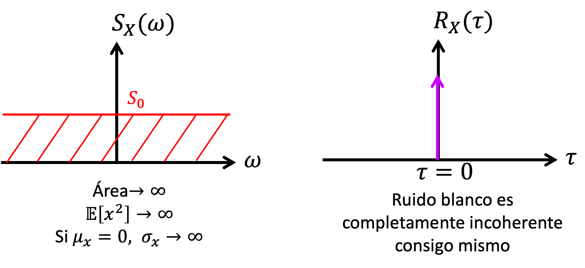
Nota: Un Ruido blanco es un p.e. Gaussiano y ergódico.
Sea \(\{X(t),t \in T\}\) un p.e., w.s.s., es un ruido blanco de banda limitada (band-limited white noise, BLWN) si:
\begin {align*} S_X(\omega ) & = \left \{ \begin {array}{ll} S_0 &, |\omega |\leq \omega _c \\ 0 &, |\omega |> \omega _c \\ \end {array} \right . \\ R_X(\tau ) & = \left ( 2 S_0 \omega _c \right ) \left ( \frac {1}{2\pi } \right ) \left [ \frac {\sin (\omega _c \tau )}{\omega _c \tau } \right ] \\ & = \left ( \frac {S_0 \omega _c}{\pi } \right ) \text {sinc}(\omega _c \tau ) \end {align*}
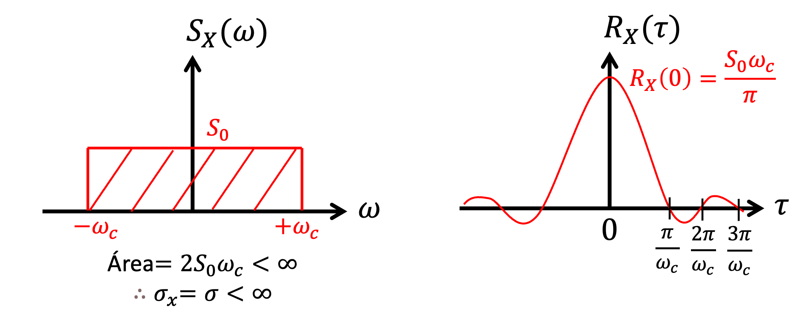
Varianza: \(\sigma ^2 = R_x(0) = \frac {S_0 \omega _c}{\pi }\).
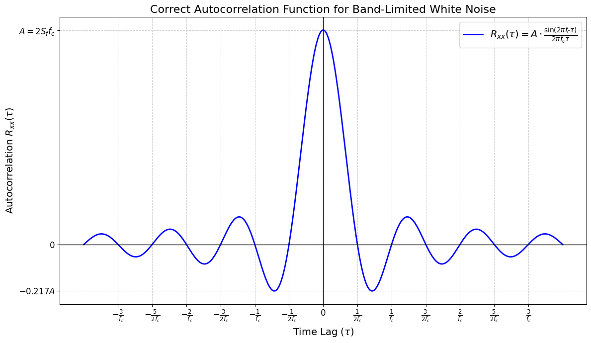
En desarrollo (Wirsching et al., 2006, Sec. 6.2).
Sea un sistema LTI:
\begin {align*} {\dot {x}} ={A}{x} + {B}u(t), \quad {x}(0)={0} \end {align*}
y asumiendo que \(u(t)\) es una realización de un p.e. \(\mathbb {U} = \{U(t), t \in T\}\) w.s.s. con \(\mu _\mathbb {U}(t) = 0\).
Objetivo: Determinar el estado \({x}(t)\), el cual se puede analizar como un p.e. w.s.s., \(\mathbb {X} = \{X(t)\), \(t \in T\}\) con \(\mu _X(t)=0\)
Recordar que la autocovarianza \({\Gamma }_X(t)\) cuando \(\mu _X(t)=0\) es:
\begin {align*} \Gamma _X(t) = \mathbb {E}\{X(t)X(t)^T\} \end {align*}
Entonces, la derivada temporal de la autocovarianza es:
\begin {align*} \dot {\Gamma }_X(t)&=\frac {d}{dt}\mathbb {E}\{XX^T\}=\mathbb {E}\{\frac {d}{dt}(XX^T)\}\\ &= \mathbb {E}\{\dot {X}X^T+X\dot {X}^T\}\\ &= \mathbb {E}\{(AX+BU)X^T+X(AX+BU)^T\}\\ &= A\mathbb {E}\{XX^T\}+B\mathbb {E}\{UX^T\}+\mathbb {E}\{XX^T\}A^T+\mathbb {E}\{XU^T\}B^T \end {align*}
Definiendo \(Q=\mathbb {E}\{BUX^T\}+\mathbb {E}\{XU^T B^T\}\) \begin {align*} \dot {\Gamma }_X &= A\Gamma _X+\Gamma _XA^T+Q \qquad \text {(Ecuación diferencial de Lyapunov)} \end {align*}
Si \({u}(t)\) es un ruido blanco, es decir, \(\mu _U=0\), \(R_U(\tau )= S_o\delta (\tau )\), con \(S_U(\omega )=S_0, \forall \omega \), y recordando que la solución analítica de \(x(t)\) es:
\begin {equation*} x(t)=\phi (t)x_0+\int _0^t \phi (t-\tau )Bu(\tau )d\tau \end {equation*}
Desarrollemos el primer término de \(Q\) de la ecuación diferencial de Lyapunov:
\begin {align*} \mathbb {E}\{BUX^T \} &= \mathbb {E} \left \{ BU(t) \left [ \int _0^t \phi (t-\tau )B U(\tau ) d\tau \right ]^T \right \}\\ &= B \int _0^t \mathbb {E} \left \{U(t) \left [U^T (\tau ) B^T \phi ^T (t-\tau ) \right ] \right \} d\tau \\ &= B \int _0^t \mathbb {E} \left \{ U(t)U^T(\tau ) \right \} B^T \phi ^T (t-\tau ) d\tau \end {align*}
Dado que \(U(t)\) es un ruido blanco con \(\mu _{U}(t)=0\), \(R(\tau ) = \mathbb {E}\{U(t)U(t +\tau )\} = S_0 \delta (\tau )\). También, se cumple: \(\mathbb {E}\{U(t)U(\tau )\} = S_0 \delta (t-\tau )\). Entonces, se puede demostrar que:
\begin {align*} \mathbb {E}\{BUX^T \}=\frac {1}{2}B (S_0) B^T \end {align*}
Por lo tanto: \begin {align*} Q &= \mathbb {E}\{BUX^T \}+\mathbb {E}\{BU^T X^T \}=2\mathbb {E}\{BUX^T \}\\ Q &= B(S_0)B^T \end {align*}
Para resolver \(\Gamma _X(t)\), se calcula \(Q\) que depende de \(S_0\) y \(B\):
\begin {align*} \dot {\Gamma }_X(t)=A\Gamma _X+\Gamma _XA^T +Q \end {align*}
La solución es única ssi \(A\) es Hurwitz.
Notas:
Estudiando el caso de la respuesta en estado estacionario para \(t \to \infty \):
\begin {align*} \lim _{t \to \infty } \dot {\Gamma }_X(t)=0 \end {align*}
En este caso, la Ecuación de Lyapunov queda de la siguiente forma:
\begin {align*} 0 = A\Gamma _X + \Gamma _XA^T + Q, \qquad \text {(Ecuación de Lyapunov)} \end {align*}
Donde ahora \(\Gamma _X\) es la autocovarianza en estado estacionario de los estados \(X\).
La autocovarianza de la respuesta \(\Gamma _X\), considerando: \begin {align*} y(t) = Cx(t) \end {align*}
donde \(y(t)\) es un p.e., w.s.s., \(\mathbb {Y} = \{Y(t), t \in T\}\) con \(\mu _Y(t)=0\).
La matriz de autocovarianza de la respuesta se determina de la siguiente manera: \begin {align*} \Gamma _Y = \mathbb {E}\{YY^T\} &= \mathbb {E}\{(CX)(CX)^T\}\\ &= \mathbb {E}\{CXX^T C^T\}\\ &= C \mathbb {E}\{XX^T\}C^T\\ &= C \Gamma _X C^T\\ \end {align*}
Donde \(\Gamma _X\) es la solución de la ecuación de Lyapunov en estado estacionario.
Sea el proceso estocástico \(\mathbb {X} = \{X(t), t \in T\}\), su Error Cuadrático Medio (Root mean square error, RMS) es una función que cuantifica... y se calcula como:
\begin {align*} \text {rms}_X(t) = \sqrt {\mathbb {E}\{(X(t) - \mu _X(t))^2\}} \end {align*}
Cuando \(\mu _X(t) = 0\) \begin {align*} & \text {rms}_X(t) = \sqrt {\mathbb {E}\{X(t)^2\}} = \sqrt {\mathbb {E}\{X(t)X(t)^T\}} \\ \Longrightarrow & \text {rms}_X(t) = \sqrt {\Gamma _{X}(t)} \end {align*}
Los parámetros de modelos de sistemas dinámico contienen incertidumbre que requiere ser incorporada para un mejor entendimiento estadístico del problema. Algunos parámetros se pueden considerar como variables aleatorias. Otros, como las vibraciones, pueden ser modeladas como procesos estocásticos. Por ejemplo.
Terremoto
Viento
Oleaje
El modelo K-T utiliza un p.e. Gaussiano estacionario escalado en función del tiempo para representar la aceleración
del suelo producto de un evento sísmico.
Consideremos el siguiente suelo.
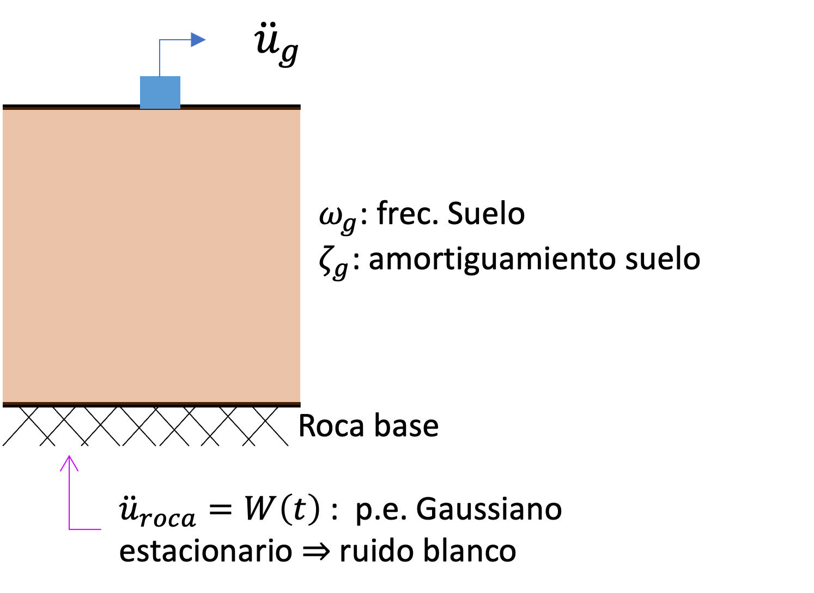
El suelo es modelado como un sistema SDOF donde la aceleración total del oscilador es lo que representa la aceleración del suelo. En este caso, la EDM del oscilador SDOF, considerando el grado de libertad \(z(t)\) (movimiento relativo del suelo respecto a la roca), es la siguiente:
\begin {align*} \ddot {z}(t) +2\xi _g\omega _g \dot {z}(t) +\omega _g^2 z(t) = W(t) \end {align*}
Considerando la aceleración de la roca base \(W(t)\) como p.e. \(\mathbb {W} = \{W(t), t \in T\}\) ruido blanco, es
\begin {align*} \mu _W(t) =& 0 \\ R_W(\tau ) =& S_0 \delta (\tau ) \\ S_W(\omega ) =& S_0, \quad \forall \omega \end {align*}
Donde \(S_0\) es el poder espectral del sismo en roca y está relacionado con una medida de intensidad del registro
sísmico, ej: \(PGA\) o \(S_a(T)\).
La aceleración total del suelo es \(\ddot {u}_{g} = \ddot {z} + w(t)\) (en campo abierto):
\begin {align*} \ddot {u}_g(t) = -2\xi _g\omega _g \dot {z}(t) - \omega _g^2 z(t) \end {align*}
En representación espacio-estado:
\begin {align*} \dot {x}_g =& {A}_g{x}_g+{B}_g W(t) \\ {y}_g =& {C}_g{x}_g \end {align*}
Donde:
\begin {align*} {x_g} = \begin {Bmatrix} z \\ \dot {z} \end {Bmatrix}, \qquad y_g = \begin {Bmatrix} \ddot {u}_g \end {Bmatrix} \end {align*}
\begin {align*} {A}_g = \begin {bmatrix} 0 & 1 \\ -\omega _g^2 & -2\xi _g\omega _g \end {bmatrix}, \qquad {B}_g = \begin {bmatrix} 0 \\ 1 \end {bmatrix}, \qquad {C}_g = \begin {bmatrix} -\omega _g^2 & -2\xi _g\omega _g \end {bmatrix}, \qquad {D}_g = [0] \end {align*}
Se puede demostrar que la función de respuesta en frecuencia (FRF) del estado de suelo es:
\begin {align*} H_{KT}(\Omega ) &= \frac {\omega _g^2+i2\xi _g\omega _g\Omega }{(\omega _g^2-\Omega ^2)+i2\xi _g\omega _g\Omega }\\ |H_{KT}(\Omega )|^2 &= \frac {\omega _g^4+4\xi _g^2\omega _g^2\Omega ^2}{(\omega _g^2-\Omega ^2)^2+4\xi _g^2\omega _g^2\Omega ^2} \end {align*}
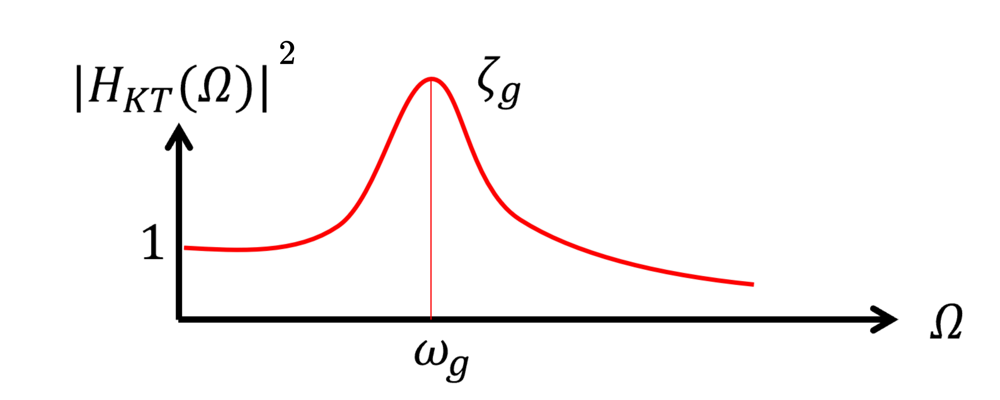
Este sistema (filtro K-T) toma como input el ruido blanco (aceleración en roca) y lo colorea generando el output que es el registro sísmico en la superficie.
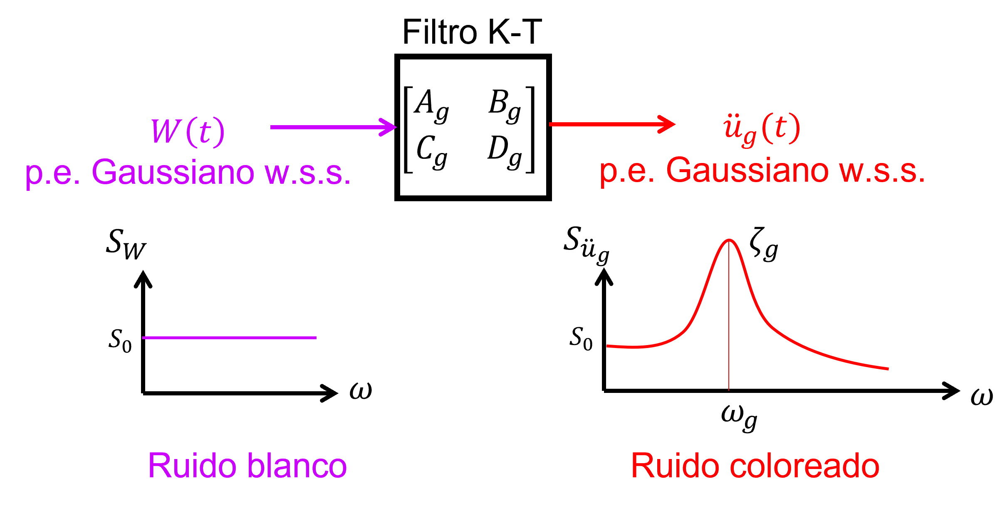
Se puede demostrar que:
\begin {align*} S_{\ddot {U}_g}(\omega ) &= |H_{KT}(\omega )|^2 S_{W}(\omega ) \\ \Longrightarrow S_{\ddot {U}_g}(\omega ) &= |H_{KT}(\omega )|^2S_0 \end {align*}
Notar que hasta el momento los parámetros del modelo K-T son: \(S_0\), \(\omega _g\), \(\xi _g\). Por ejemplo, los parámetros del terremoto El Centro 1940 son los siguientes (Soong & Grigoriu, 1993):
Generalmente los registros de aceleraciones tienen un contenido de frecuencias de hasta \(30\) [Hz].
Equivalentemente, se puede generar un sistema aumentado (Filtro K-T + Estructura) que tome como input el ruido blanco \(W(t)\) y retorne como output la respuesta de la estructura \({y}(t)\).
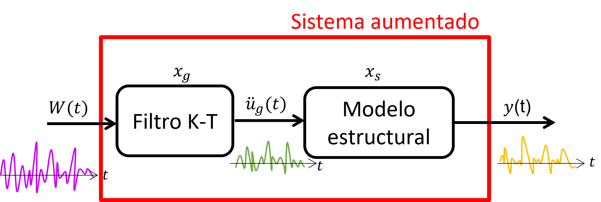
Ecuaciones del modelo K-T:
\begin {align*} \dot {x}_g(t) &= A_g x_g(t) + B_g W(t)\\ y_g(t) &= C_g x(t)\\ \end {align*}
Ecuaciones del sistema estructural:
\begin {align*} \dot {x}_s(t) &= A_s x_s(t) + B_s \ddot {u}_g(t)\\ y_s(t) &= C_s x(t) \end {align*}
El sistema aumentado en representación espacio-estado \(x_a = \begin {Bmatrix} x_s \\ x_g \end {Bmatrix}\):
\begin {align*} \dot {x}_a &= A_a x_a + B_a W(t)\\ y &= C_a x_a \end {align*}
\begin {align*} A_a = \begin {bmatrix} A_s & B_s C_g \\ 0 & A_g \end {bmatrix}, \qquad B_a = \begin {bmatrix} 0 \\ B_g \end {bmatrix}, \qquad C_a = \begin {bmatrix} C_s & 0 \end {bmatrix} \end {align*}
Sea \(\Gamma _{X_a}\) la autocovarianza de los estados del sistema aumentado. Se puede obtener la autocovarianza de la respuesta \(\Gamma _Y\) desde la ecuación de Lyapunov en estado estacionario:
\begin {align*} 0 &= A_a\Gamma _{X_a} +\Gamma _{X_a}A_a^T+Q_a\\ \Gamma _Y &= C_a\Gamma _{X_a}C_a^T \end {align*}
donde \(Q_a = B_a \left (S_0 \right ) B_a^T\).
El registro sísmico sintético que tenemos hasta el momento \(\ddot {u}_g(t)\) es un ruido blanco estacionario. Pero, en realidad los registros sísmicos son p.e. no estacionarios. Por lo tanto, hay que escalarlo con una función de modulación \(\psi (t)\) para que le de “forma” de un registro sísmico.
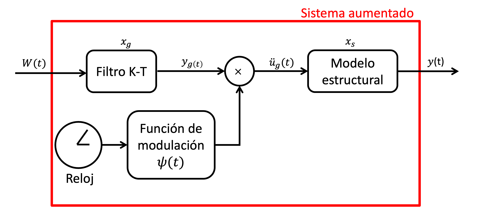
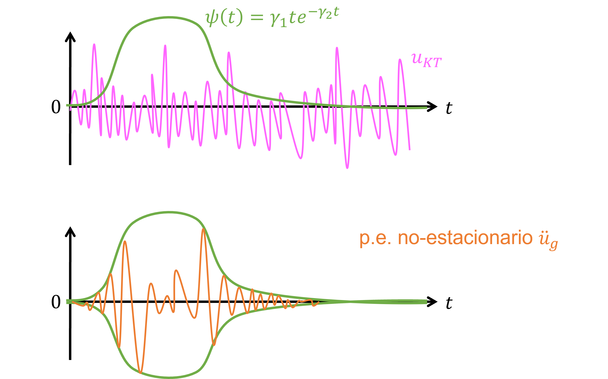
Entonces:
\begin {align*} \ddot {u}_g(t) &= \psi (t) y_{g}(t) \\ &= \psi (t) \left [ C_g x_g(t) \right ] \\ &= \underbrace {\left [ \psi (t) C_g \right ]}_{C_g^{NE}(t)} x_g(t)\\ &= C_g^{NE}(t) x_g(t) \end {align*}
Notar que se mantiene \(\mu _{\ddot {U}_g}(t) = 0\), pero, \(\sigma _{\ddot {U}_g}(t) \neq \text {cst}\).
Por lo tanto, el modelo matemático resulta:
\begin {align*} \dot {x}_g(t) &= A_g x_g(t) + B_g W(t)\\ \ddot {u}_g(t) &= C_g^{NE}(t) x(t)\\ \end {align*}
\begin {align*} \dot {x}_s(t) &= A_s x_s(t) + B_s \ddot {u}_g(t)\\ y(t) &= C_s x(t) \end {align*}
Ahora el sistema aumentado tiene matrices que varían en el tiempo.
\begin {align*} \dot {x}_a(t) &= A_a(t)x_a(t) + B_a w(t)\\ y(t) &= C_a x_a(t) \end {align*}
\begin {align*} A_a(t) = \begin {bmatrix} A_s & B_s C_g^{NE}(t) \\ 0 & A_g \end {bmatrix}, \qquad B_a = \begin {bmatrix} 0 \\ B_g \end {bmatrix}, \qquad C_a = \begin {bmatrix} C_s & 0 \end {bmatrix} \end {align*}
La covarianza en este caso se debe resolver integrando la ecuación diferencial de Lyapunov donde \(\Gamma _{X_a}(t)\) está en función del tiempo (\(\dot {\Gamma }_{X_a} \neq 0\)):
\begin {align*} \dot {\Gamma }_{X_{a}}(t) = A_a(t) \Gamma _{X_a}(t) + \Gamma _{X_a}(t) A_a(t)^T + Q_a \end {align*}
donde \(Q_a = B_a \left ( S_0 \right ) B_a^T\).
Como \(\Gamma _{X_a}(t)\) varía en el tiempo, entonces \( \Gamma _Y(t)\) también varía en el tiempo.
Nota: Ecuación diferencial de Lyapunov puede ser resuelta numéricamente utilizando métodos de integración temporal (por ejemplo, método de Euler).